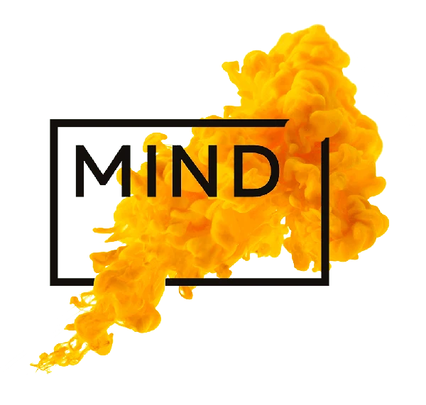

Back to Being gaat in première.
Zes dagen, 130 kilometer over de Camino en onderweg een app gebouwd voor MIND. Nu is het tijd om ons verhaal te vertellen, en de app daarna op een feestelijke avond aan MIND te overhandigen.
We hebben de hele reis gefilmd. Op dinsdag 3 november nemen we je in zo’n 40 minuten mee: wat er nodig was om ons idee werkelijkheid te maken, hoe de elementen roet in het eten gooiden en hoe we daarmee omgingen.

Daarna geven we de app door aan MIND
We dragen de app kosteloos over aan stichting MIND. Dienke Bos, directeur van MIND, neemt hem in ontvangst.